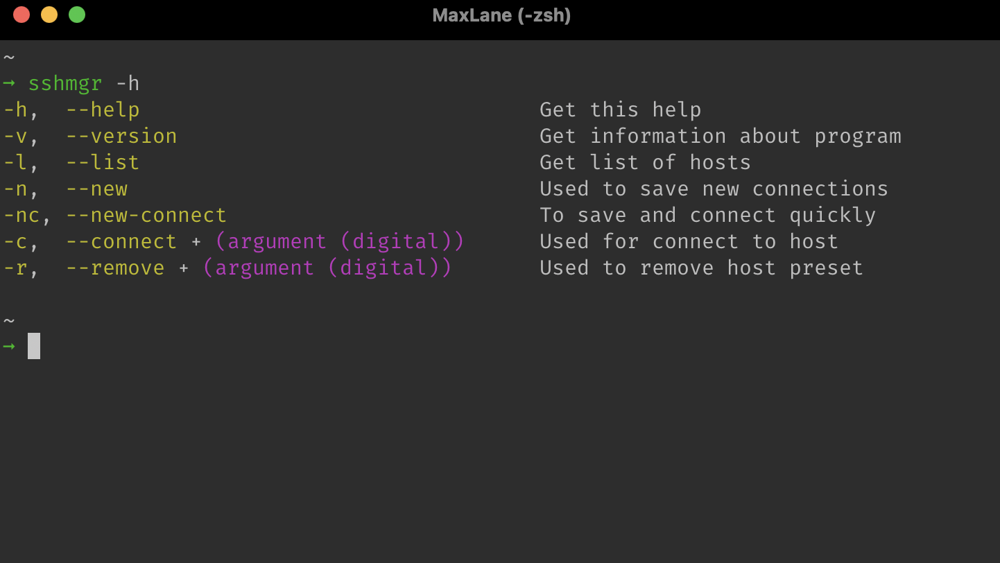

SSH-manager — это проект, который представляет собой консольную
утилиту, написанную на C++.
Данная утилита, позволяет вам хранить все ваши
данные об SSH подключениях в одном месте и быстро
подключаться к удалённым машинам, ускоряя этот процесс.
